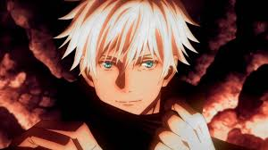

Gojo Satoru is one of the most popular anime character from the anime Jujutsu Kaisen. In Jujutsu Kaisen, Gojo has immense power, and of course attractive.
Gojo before expansing domain.
About Gojo Satoru
Gojo Satoru (五ご条じょう悟さとる Gojō Satoru) is one of the main protagonists of the Jujutsu Kaisen series. He is a special grade jujutsu sorcerer and recognized as the strongest in the world. Ssyotu id the pride of the Gojo Family and the first person to inherit both the Limitless and the Six Eyes. Before being trapped, he worked as a teacher at the Tokyo Jujutsu High while protecting and training strong young allies.
Gojo Satoru's power
- Cursed Energy Manipulation
- Immense Cursed Energy
- Reversed Cursed Technique
- Black Flash
- Inherited Technique
- Limitless
- Infinity
- Cursed Technique Lapse: Blue
- Cursed Technique Reversal: Red
- Hollow Technique: Purple